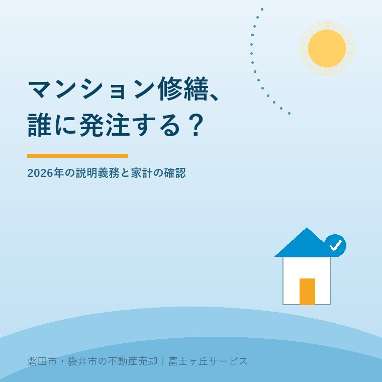
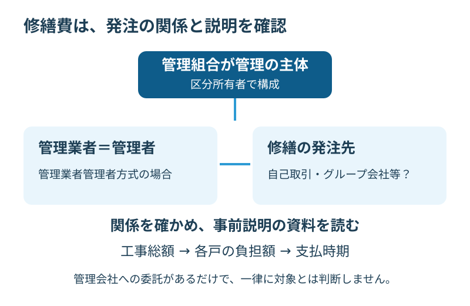

マンション修繕費、2026年の説明義務
2026年9月30日｜カテゴリ：コスト・制度

この記事の要点
管理会社に任せているマンションの修繕費、何を確かめればいい？
2026年4月施行の改正では、管理業者が管理者を務める方式の利益相反取引等に事前説明義務があります。全修繕の一律ルールとせず、管理方式、発注先との関係、説明資料、持ち主の負担を確認します。磐田市・袋井市・森町では、介護施設の運営から不動産事業を始めた富士ヶ丘サービスのような地域密着の会社に、資料整理から相談する選択肢があります。
大石浩之（磐田市／不動産業）です。親が住まなくなった分譲マンションでも、修繕に関する通知は届きます。家族が最初に見たくなるのは金額ですが、その前に、誰が発注を決め、誰が工事を受けるかを確認したいところです。
本記事は2026年9月30日に確認した国土交通省の公表資料を基に、管理会社が管理者も務める場合を扱います。管理会社への不信をあおるためではなく、持ち主が説明を受け、自分の負担を判断するための確認です。
2026年4月の義務は、管理方式から確認する
国土交通省の2026年5月29日発表は、改正されたマンションの管理の適正化の推進に関する法律と施行規則が、2026年4月1日に施行されたと説明しています。管理業者管理者方式の利益相反のおそれがある取引の事前説明義務等を、重点的に指導するという内容です。
管理業者管理者方式とは、マンション管理業者が管理組合の管理者に就任する方式です。管理会社へ日常の業務を委託しているだけの状態と、管理者という立場まで任せている状態を分けます。まず自分の物件がどちらなのかを確認します。
国土交通省のガイドライン概要は、管理の主体が管理組合であることを示しています。管理者を外部に任せても、持ち主たちの組合が消えるわけではありません。「会社が全部やる」と「持ち主が何も確認しない」は同じ話ではないのです。
私は、仕事や介護などで役割を引き受けにくい所有者に、外部へ任せる選択肢がある点を評価します。役割と責任を整理できれば、家族だけで抱え込む必要も減らせます。そのためにも、何を任せたかが書面で分かる仕組みが役に立ちます。
その上で注文したいのは、「専門の会社だから大丈夫」で説明を終えないことです。契約書に書かれた管理者、実際に説明する担当者、今回の工事の受注者を示してほしい。所有者が質問できる材料まで渡されて初めて、任せる判断ができます。

修繕費の前に、発注する側と受ける側を見る
利益相反とは、立場によって利益がぶつかるおそれがある関係です。修繕を頼む管理組合側の管理者と、代金を受け取る業者が同じ会社だったり関係会社だったりする場合、誰の利益を基に選んだかが見えにくくなる可能性があります。
国土交通省のガイドライン概要は、自己取引やグループ会社との取引等では、あらかじめ説明会を開き、区分所有者等に取引に係る重要な事実を説明する義務を示しています。関係会社への発注をすべて禁止した、という説明ではありません。
私なら見積りの金額の横に、発注先との関係、工事範囲、選定の理由、説明会の日をメモします。修繕費が高く感じる場合も、比較している見積りの範囲が違えば、総額だけで割高とは決められません。足場や調査、追加工事の扱いなど、含むものをそろえて質問します。
| 見る書類 | 持ち主からの質問 |
|---|---|
| 管理者に関する契約 | 誰が管理者で、どこまで権限を持つか |
| 発注・見積りの資料 | 受注者との関係と、選んだ理由は何か |
| 説明会の案内・資料 | 取引前に何を説明し、質問をどう受けるか |
私は、資料に会社名が二つあるだけで関係がないとも、名前が似ているから同じ会社だとも判断しません。管理者に関係の説明を求める方が確実です。疑問が残れば、説明資料の該当箇所を示して追加回答を依頼します。個別の取引への義務の適用は専門家に確認を。
義務と望ましい対応を分けて資料を読む
国土交通省のガイドライン概要には、事前説明の義務と、望ましい運営体制の両方が載っています。書かれている項目をすべて同じ強さの法的義務として扱わず、言葉の違いを確認する必要があります。
例えば大規模修繕では、区分所有者と監事から構成する修繕委員会を設置し、主体として検討することが望ましいとされています。小規模マンション等で設置が難しい場合の例外もあります。「委員会がないから直ちに違法」とは判断しません。
私は、委員会という名前の有無より、誰が内容を検討し、所有者の疑問をどう反映する体制かを聞きたいと考えます。設置しないなら、どのように検討するかの説明を受ける。持ち主が追える記録があれば、工事が終わった後も判断の経緯を確認できます。
なお、2026年5月29日発表の立入検査は、2025年度に検査した112社のうち31社へ是正指導を行い、31社すべての是正等を確認したという結果です。全国の管理会社全体の違反割合ではなく、2026年4月の新しい義務に違反した会社の集計でもありません。
私は、この件数を使って「管理会社の何割が危ない」と言うつもりはありません。検査対象も時期も違う数字を、自分のマンションの判定に使うのは乱暴です。公表結果を読むなら、是正が確認されたところまで読み、目の前の書面の確認に戻ります。
総額から持ち主の負担へ、数字を分ける
修繕費の資料では、工事の総額、修繕積立金から支出する額、追加の一時金、借入れの有無を分けて読みます。以下は私の実務上の提案です。全体の金額が分かっても、自分の家計からいついくら出るかが分からなければ、保有を続ける判断に使えません。
例えば、仮に追加負担の総額が1,200万円で、説明のため30戸で均等に割れば1戸40万円です。これは割り算の例であり、実際の負担額ではありません。各戸の負担は規約や決議などの条件を確認します。単純平均をそのまま請求額として家族に伝えないでください。
40万円を一度に払う例と、別の時期に分けて払う例では、必要な手元資金が違います。親の施設費用と同じ口座から払う予定なら、支払月が重ならないかを見る。将来の修繕もあるので、今回の支出後に残る積立金の説明も読みます。
修繕費は総額だけ見ても判断できない。誰に発注し、自分にいくら残るかまで見る。私はこう考えます。安く見える工事でも必要な範囲が抜けていれば、後から別の支出になります。反対に、範囲が確認できないまま高額だから適正だとも言えません。
私にも、どこまで比較資料を求めるかの迷いはあります。比較を増やすだけで判断が遅れる場合もあるからです。ただ、発注先との関係も各戸の負担も分からない段階なら、賛否を急ぐ理由にはしません。質問の回答期限と、決議の予定を一緒に確認します。
売却を考える場合は売却価格より手取りで考える方法へつなげます。修繕費を負担した分が同額で売値に上乗せできるとは限りません。実家の四つの価格の違いも踏まえ、費用と査定を別々に確認します。
磐田・袋井の親のマンションで今日開く書類
磐田市・袋井市にある親の分譲マンションでも、管理業者管理者方式かどうかは物件ごとに確かめます。地域が同じだから運営も同じとは限りません。管理規約、契約、総会資料、今回届いた修繕の案内を手元に置きます。
遠方の家族が通知を受け取る場合は、所有者宛ての書類がどこに届き、誰が読んでいるかから整理します。家族が窓口になれる範囲や、資料の受取り方法は管理者へ確認してください。親の意向や代理の権限を確認せず、家族が賛否を決めてよいとは考えません。
家を残す気持ちと支出の整理は両立します。いつか戻る実家をどう考えるかと同じく、保有を続ける場合の負担を見える形にすることが先です。修繕の通知が来たから、すぐ売るという結論にはしません。
- 管理業者が管理者も務めているかを確認する。
- 発注先との関係と、事前説明の資料をそろえる。
- 総額と各戸の支払額・支払時期を分ける。
私は、今日の一歩を管理者への質問一通にします。「今回の発注先との関係、説明会の資料、当方の負担額と支払時期を確認したい」と具体的に伝える。それぞれに回答が来れば、家族の判断は金額だけの印象から一段進みます。
よくある質問
実家と家族の判断に関する疑問を整理します。
- 管理会社があるマンションは、すべて対象ですか？
- 管理会社に清掃や会計などの管理業務を頼むことと、その管理業者が管理組合の管理者になることは別です。今回取り上げる事前説明義務は、管理業者管理者方式の利益相反のおそれがある取引等に関するものです。管理者名、契約、今回の発注先との関係を確認してください。具体的な義務の適用は専門家に確認を。
- グループ会社への修繕発注は禁止されましたか？
- 国土交通省の概要資料は、自己取引やグループ会社との取引等で、あらかじめ説明会を開き、区分所有者等へ取引に係る重要な事実を説明する義務を示しています。一律の発注禁止と読み替えてはいけません。関係会社である事実と、見積りの範囲や選定理由を照合します。個別取引の適法性は専門家に確認を。
- 大規模修繕の修繕委員会は必ず必要ですか？
- 国土交通省のガイドライン概要は、区分所有者と監事から構成する修繕委員会を設け、主体として検討することを望ましい対応としています。小規模マンション等で設置が難しい場合の例外にも触れています。法的な事前説明義務と、推奨される体制を混同せず、物件の体制と採用理由を管理者に確認してください。

この記事を書いた人：大石浩之（磐田市／不動産業・宅地建物取引士）
富士ヶ丘サービス株式会社。介護施設の運営から不動産事業を始め、磐田市・袋井市・森町で、介護と相続、実家の売却を一体で相談できる窓口を設けています。家族が困らない売却のため、資料と現地の条件を一件ずつ整理します。著者プロフィール
本記事は2026年9月30日時点の公開情報と筆者の意見です。制度・数値・手続き・契約条件は変更されることがあります。税務・登記・相続・契約などの個別判断は、税理士・司法書士・弁護士などの専門家に確認を。